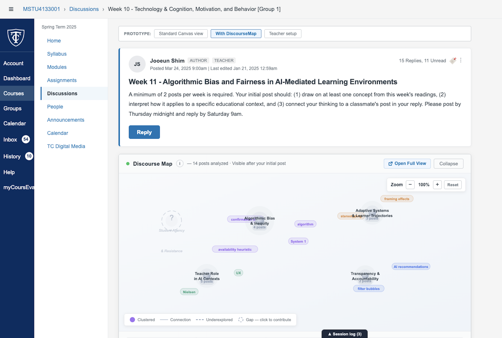
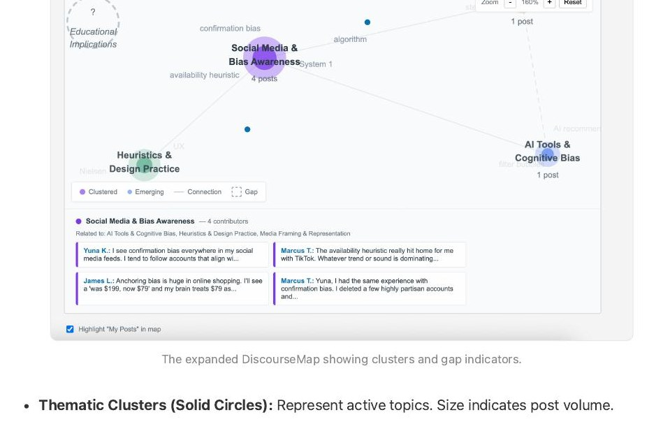
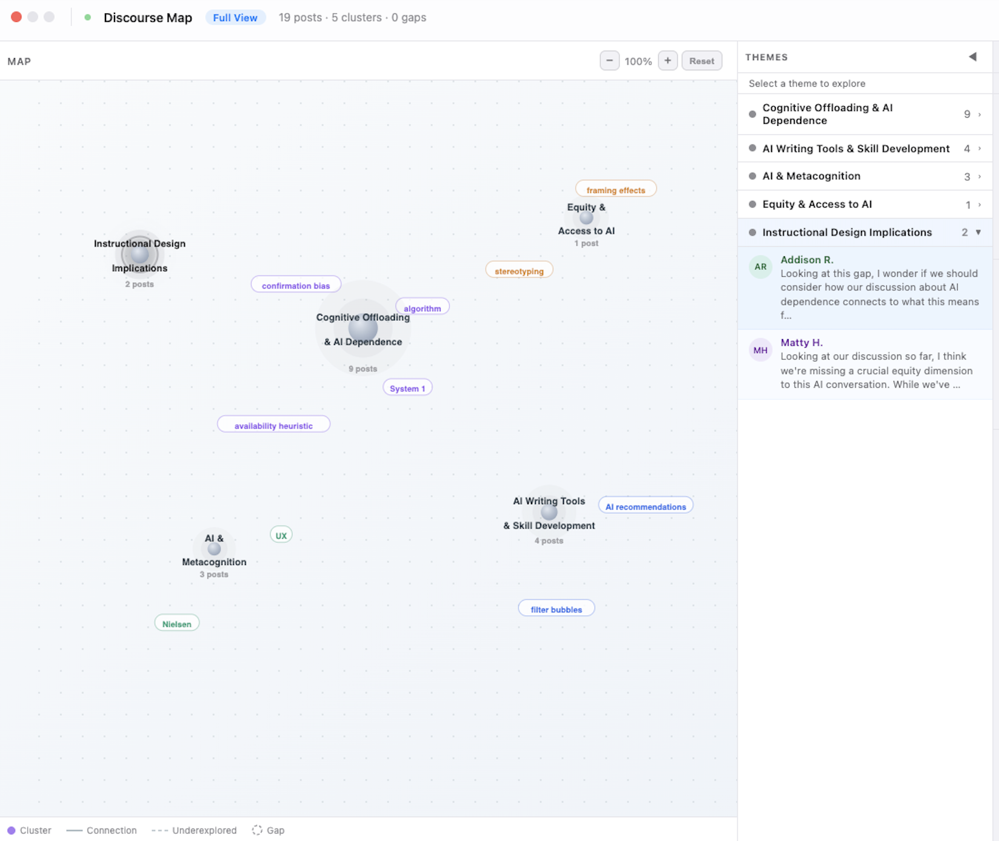

01 · Problem
Graduate discussion forums produce parallel monologues — not knowledge building.
Asynchronous discussion in graduate education is designed to support reflective, dialogic learning. In practice, students post minimally, choose reply targets by convenience, and stop once they meet formal requirements. This isn't a motivation problem — it's a structural one.
When the epistemic structure of a discussion is invisible, learners can't identify where their contribution would add value. They default to agreement, repetition, and surface-level participation — not because they lack ideas, but because the interface gives them no map.
Standard LMS boards present posts as flat chronological threads. Dominant interpretive frames emerge early; subsequent participants repeat rather than challenge them; epistemic diversity declines over time. Participation quantity metrics look fine. Knowledge-building quality does not.
Root Cause A
Epistemic Invisibility
Learners can't see where ideas converge or diverge, which perspectives dominate, or which areas are unexplored — so they can't make purposeful contributions.
Root Cause B
Structural Fragmentation
Thread-based UI makes it impossible to grasp relationships among ideas or connect across contributions. Discourse stays fragmented; cumulative advancement fails.
Root Cause C
Cognitive Overload
Text-heavy linear interfaces impose high cognitive burden on interpreting complex academic discourse — making it easier to post something simple than something substantive.
Root Cause D
No Purposeful Entry Point
Without visibility into what's missing, learners can't identify unique contribution opportunities. Gaps stay invisible; the easiest move is always to agree with what's there.
02 · Design
Three mechanisms. One principle: intervene at the moment of contribution.
DiscourseMap is designed as a complementary layer on Canvas — not a replacement. Students continue to read and post in the familiar thread interface; the map provides navigational context and epistemic orientation beneath it.

Cluster View — AI-driven thematic clustering transforms the discussion thread into a spatial map. Solid circles = active themes (size = post volume). Dashed circles = unexplored gaps.
Core Design Mechanisms
Feature
What it does
Design rationale
Transforms flat thread into spatial map of thematic clusters, updating in real time as posts are added.
Makes discourse structure legible within the environment where learners work, not apart from it (Bodemer et al., 2018).
Dashed-outline nodes mark underexplored areas; clicking opens a reply flow seeded for first contributions in that theme.
Transforms absence from invisible to actionable — a passive observation becomes an active invitation (Scardamalia & Bereiter, 2006).
Context-sensitive scaffolding in the reply box: cluster-aware, map-wide, or gap-specific depending on where the student is responding.
Effective when immediate, personalized, and calibrated to learner's current epistemic position — not generic (Ba et al., 2025).

Epistemic Prompts — Context-sensitive scaffolding appears in the reply box. Prompts shift based on where in the map the student is responding: cluster-aware, map-wide, or gap-seeding.
03 · Process
From literature review to deployable prototype — in iterative cycles.
The design process followed an iterative research-design methodology: theoretical grounding first, then prototype construction, then synthetic formative evaluation, then refinement before IRB-approved human participant testing.
Phase 01
Theoretical Grounding
Synthesized four theoretical frameworks: Knowledge Building (Scardamalia & Bereiter, 2006), Group Awareness Tools (Bodemer et al., 2018), Multimodal Visualization (Jang & Lee, 2024), and AI-mediated Scaffolding (Ba et al., 2025). Identified the convergent claim: making epistemic structure visible supports more purposeful, knowledge-building-oriented participation.
Phase 02
Design Rationale & Positioning
Positioned DiscourseMap as a complementary and compensatory Canvas intervention. Differentiated from Packback (inquiry-first) and Yellowdig (gamification) by focusing on spatial synthesis of collective knowledge. Three core design decisions: analysis-view not replacement forum, actionable gaps not merely indicative, context-sensitive prompts not generic.
Phase 03
Prototype Development
Built as a React application deployed on Vercel. Implemented AI-driven thematic clustering, gap indicator visualization, connection line rendering with hover-reveal conceptual bridges, and context-sensitive epistemic prompt generation. Constructed three scenario fixture files (Surface, Deep, Polarized) with structured session logging for synthetic evaluation.
Phase 04
Synthetic Formative Evaluation
Designed a crossed factorial evaluation: 3 epistemic personas (Minimum Complier, Surface Engager, Curious Builder) × 3 discussion scenarios (Surface, Deep, Polarized) = 15 synthetic sessions. Grounded personas in Van Aalst's (2009) KB discourse taxonomy. Session logging captured cluster navigation, prompt engagement, reply content, and cross-cluster behavior.
Phase 05
Educator Guide & IRB Preparation
Produced an Educator Guide with classroom-ready facilitation scripts. Drafted IRB application for human participant user testing (Columbia graduate students, between-subjects design). Synthetic evaluation findings informed specific design refinements — consensus warning threshold recalibration, and more direct scaffolding pathways toward gap engagement — prior to live deployment.
04 · Evaluation
Synthetic formative evaluation: 15 sessions, three epistemic conditions.
Before human participant testing, a structured synthetic evaluation tested DiscourseMap's core mechanisms against the range of epistemic conditions the tool is designed to address — from minimal engagement to entrenched polarization.
Epistemic Personas — grounded in Van Aalst (2009)
Minimum Complier
Jennifer
Dismissed all prompts in 302–303ms — too fast to read. 1 cluster per session. No gap engagement. No cross-cluster replies across all 3 scenarios.
KB: Knowledge Sharing
Surface Engager
Stella & Liz
Brief prompt exposure (602–604ms). Extended prior posts with personal experience. Stayed within single clusters. No gap navigation.
KB: Knowledge Construction
Curious Builder
Addison & Matty
Selected prompt starters; navigated gap clusters; posted with multi-cluster attribution (2–3 regions). Generated all cross-cluster synthesis events.
KB: Knowledge Creation
Key Findings
F1
Prompt dismissal time reliably indexes scaffolding engagement
302–303ms (Jennifer) = too fast to read. 602–604ms (Stella/Liz) = brief exposure, no selection. Curious Builders triggered prompt_inserted events but promptStarterUsed remained false — scaffolding influenced contribution direction without determining content. Productive, not prescriptive.
F2
Gap engagement was exclusive to Curious Builder personas
Addison and Matty navigated to and posted in gap clusters in every scenario. Jennifer, Stella, and Liz posted exclusively within pre-existing clusters across all 9 sessions. Gap indicators were perceptually available to all — only Curious Builders translated visibility into action.
F3
The Deep scenario produced the most distributed epistemic structure
Deep: 23 posts across 5 clusters, 0 remaining gaps at session close. Polarized: persistent structural tension — bridging contributions insufficient to resolve consensus warnings. Surface: eliminated initial gaps but retained consensus warning in Cognitive Offloading cluster.
F4
extra_themes_set events reveal the bridging mechanism in action
When Curious Builders posted into gap clusters, they consistently triggered multi-cluster attribution. Addison's instructional-design post: attributed to [instructional-design, cognitive-offloading, metacognition-ai]. This cross-cluster attribution is precisely the knowledge-building behavior the tool is designed to support (Scardamalia & Bereiter, 2006).

Connection View — Hover over connection lines to reveal conceptual bridges. Dashed lines signal unwritten bridges — active contribution opportunities for learners.